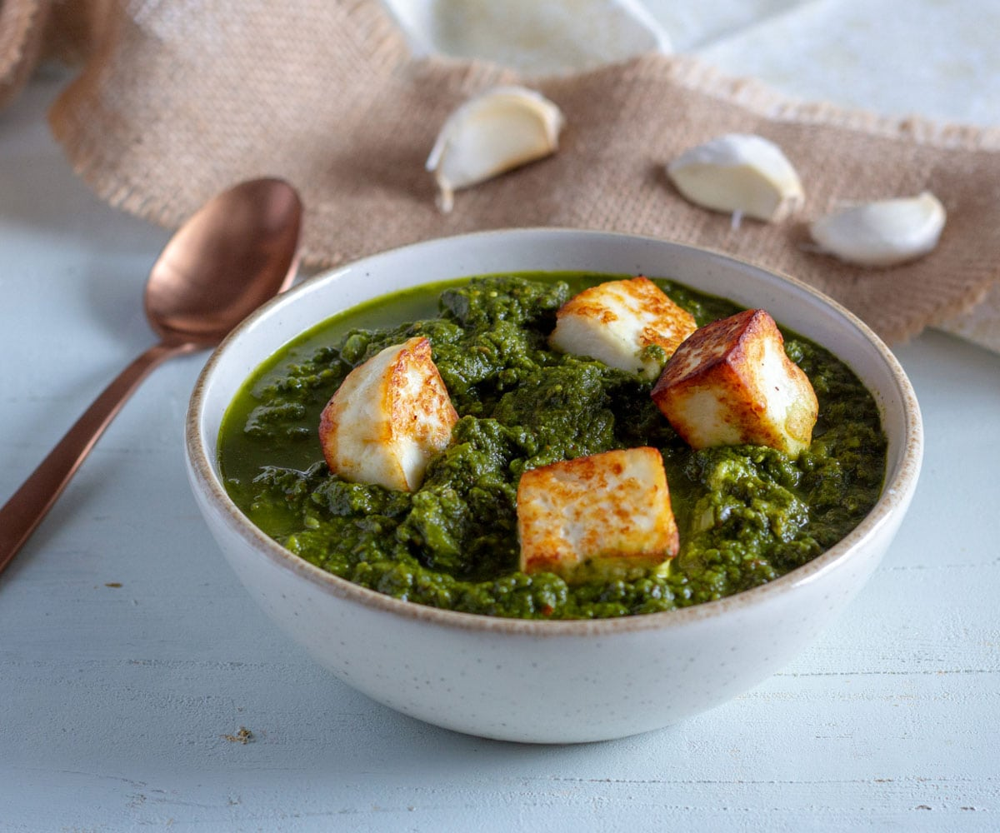

Saag paneer

Description
Saag Paneer is a traditional Indian dish created by old chamans estimated 500 years ago.
This delicious recipe contains all the most necessary nutricious elements the people needed, especially the constantly deficient proteins that you can find in the Hindu "magical" cheese called paneer
No more talking! Let's take look at the rest of the ingredients ;)
Ingredients
- 2 bunches of spinach, roughly chopped
- 1 bunch fenugreek leaves
- 1 teaspoon cumin seeds
- 1 teaspoon cayenne pepper
- 3 teaspoons garam masala
- 1 onion, thinly sliced
- 1 teaspoon grated fresh ginger
- 250g of paneer cheese
- 1 tablespoon olive oil or coconut oil
- 3 cloves garlic
- 3 tablespoons heavy whipped cream
- pinch of salt or more to taste
Steps
- Bring a large saucepan of water to a boil; add spinach and fenugreek and cook until wilted, about 3 minutes. Drain well; transfer to a food processor and blend until finely chopped, about 5 pulses.
- Heat 1 tablespoon canola oil in a large skillet over medium heat; add paneer cubes and fry until browned on all sides, about 5 minutes. Transfer paneer onto a plate.
- Add garlic and ginger and stir to coat. Stir in tomato, garam masala, turmeric, and cayenne pepper; cook until tomato breaks down, stirring often, about 10 minutes.
- Stir in pureed spinach mixture, paneer cubes, and cream; add salt to taste. Reduce heat to low, cover, and simmer for 15 minutes, stirring occasionally.